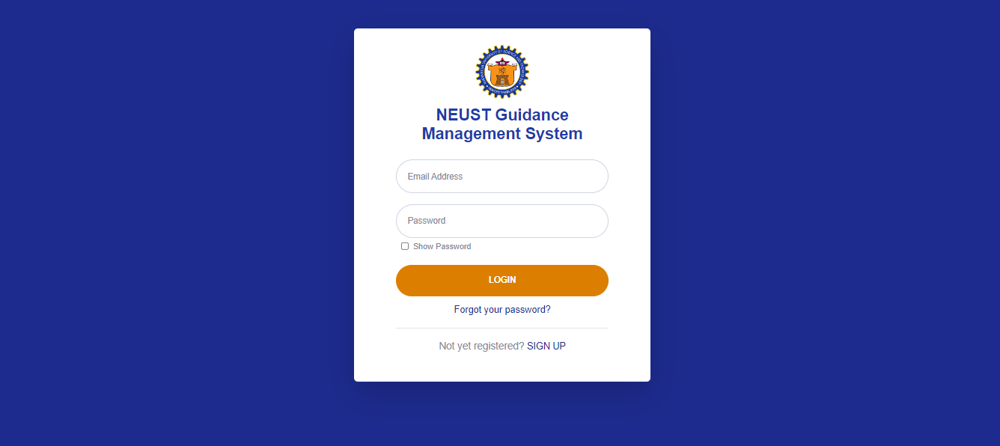
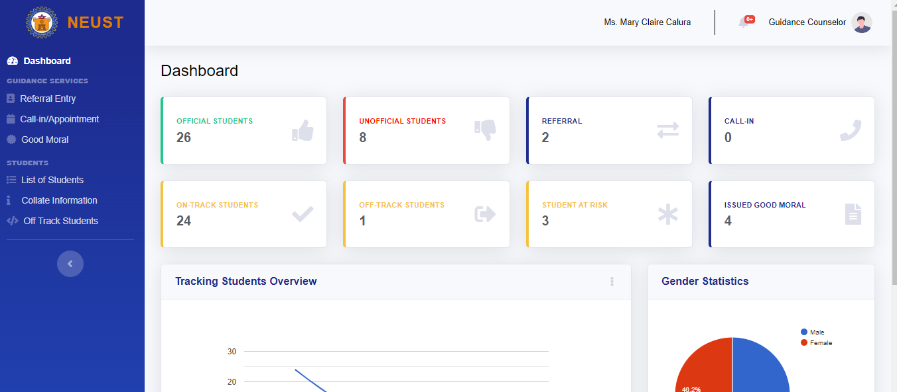
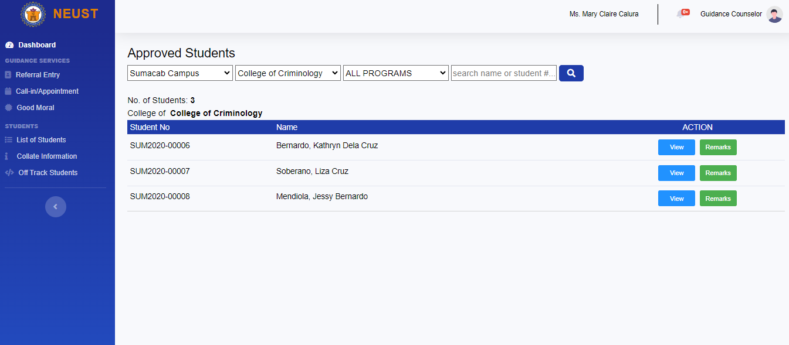
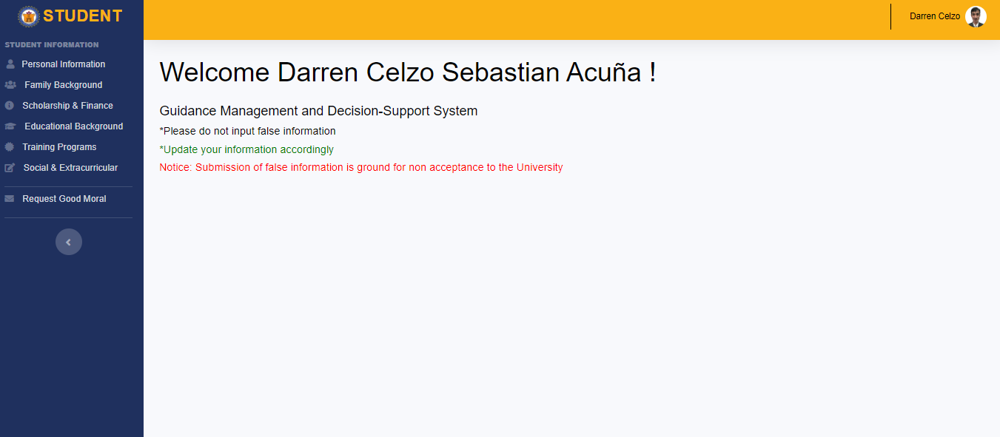
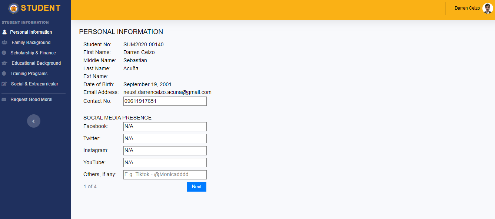
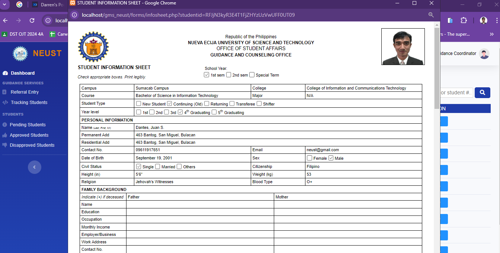
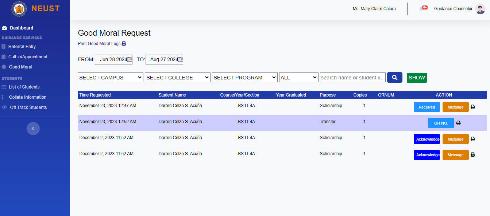
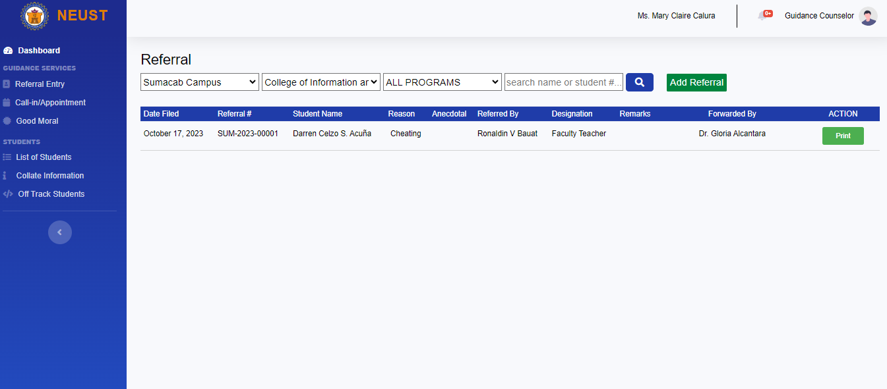
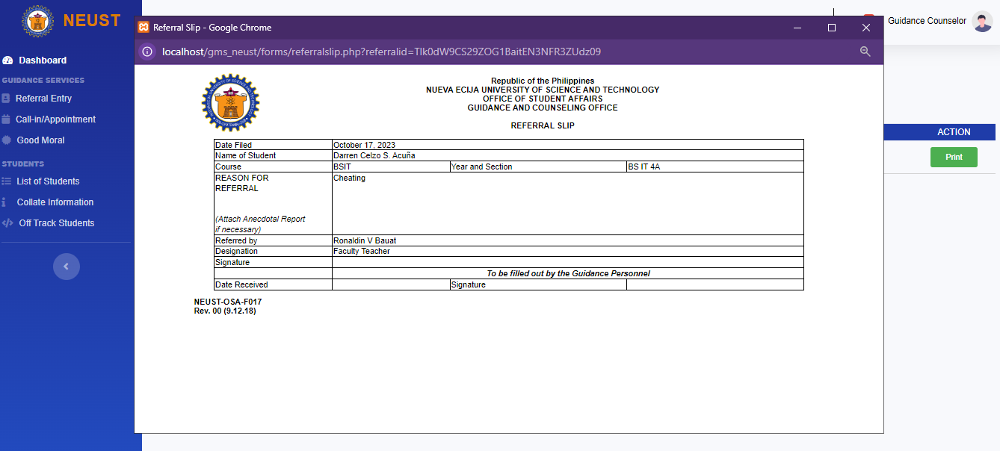
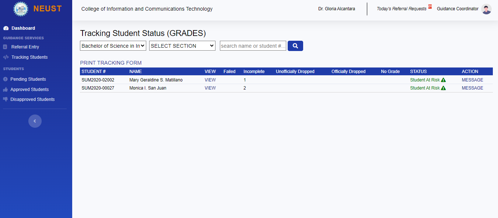

Login Interface of Guidance Counselor, Coordinators, Teachers & Students

Dashboard

Student List

Interface of Student

The students can update their information within the system

The guidance counselors & coordinators can view the students' information in ISO form format. (Student Information Sheet)

The students can also request for a good moral in the system

The NEUST employee can refer a student who have an issue

This is the sample referral slip that is generated by the system

The system can also track the academic progress of the system
